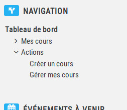

Création d'un espace de cours
La création d'un espace de cours est possible pour chaque enseignant de l'ENT, simplement en cliquant
sur "Créer un cours" dans le bloc de navigation.

L'utilisateur a également la possibilité de gérer ses espaces de cours déjà créés en cliquant sur
"Gérer mes cours" dans le bloc Navigation.